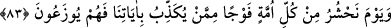

doğmasının kıyamet alâmetlerinin sonuncusu olduğudur.” Nitekim bir rivâyette şöyle
geçmektedir: “Deccal, yüzyılın başında çıkar; İsa (a.s.) iner ve onu öldürür. Sonra
yeryüzünde kırk yıl kalır. İnsanlar da güneş batıdan doğduktan sonra yüz yirmi yıl
yeryüzünde kalırlar.”
Hâsılı sarı ırka mensup olanlar (Benü’l-asfar), yâni muhaddislerin görüşüne göre
Frenkler ortaya çıkıp altı yılda yeryüzüne hâkim olduktan sonra yedinci senede Mehdî
zuhûr eder. Sonra Deccal zuhûr eder. Sonra Îsâ (a.s.) iner. Sonra Dâbbe çıkar. Sonra
güneş batıdan doğar. Nitekim muhaddislerin şu sözleri de buna delâlet eder: Dâbbe
çıkınca hafaza melekleri tutulur, kalemler kaldırılır ve artık bedenler amellere şâhid
olur. İşte bu, dâbbenin çıkışı ile güneşin batıdan doğuşunun birbirine pek yakın
oluşundan dolayıdır. Çünkü tevbe kapısı, ancak güneşin batıdan doğmasından sonra
kapanır. Gerçek bilgi Allah katındadır.
Âriflerden birisi şöyle demiştir: “Dâbbetü’l-arzın şeklindeki ve mahlûkâtın yaratılış
husûsiyetlerini toplamasındaki sır, onun kevnî şehâdî hayevânî istîdâdın sûreti, küllî
hayvânî tab’ın misâli ve dünyevî hakîkatlerin cem’iyyetini kendinde toplamasıdır. Yine
o küllî unsurî berzahın sırrıdır. Ondan küfür-îman, tâat-isyan, insanlık- hayvanlık gibi
birbirine zıt hakîkatların sırları zuhûr eder. O kendisinde basîret sâhipleri için
mânâların ve sırların bulunduğu bir âyet-i câmiadır. Keşfü’l-künûz’da böyle
geçmektedir.
Şu halde akıllı kimseye gereken, Allah’ın âyetlerine kulak vermek, vaad ve vaîdinden
(tehdidinden) öğüt almak, Allah Teâlâ’nın kaderine îman etmek, ömür bitmeden ölüm ve
yeniden diriltilme için hazırlanmaktır. Emr-i bi’l-ma’rûf ve nehy-i ani’l-münkerin terki
ile hayır kesilir ve dünyanın nizâmı sebebiyle bozulur ve artık kıyamet yakındır.
Ey Rabbim, bir toz gibi ortadan kalkmadan
Hidâyet bulutundan bir rahmet gönder bana
Allah Teâlâ’dan ömür bitmeden ve eceller gelmeden bizi hayra ve sâlih amellere
muvaffak kılmasını niyâz ederiz.
83. O gün, her ümmet içinden âyetlerimizi yalan sayanlardan bir cemaat toplarız
da onlar toplu olarak (hesap yerine) sevkedilirler.
“O gün, her ümmet içinden âyetlerimizi yalan sayanlardan bir cemaat toplarız.”
Çünkü Âdemoğullarının birbirinden ayrıldıkları günden beri her ümmette ve her asırda
Allah’ı inkâr edenler eksik olmamıştır. Bu ümmete nisbetle “âyetler” ile Kur’ân
âyetleri kasdedilmiştir.